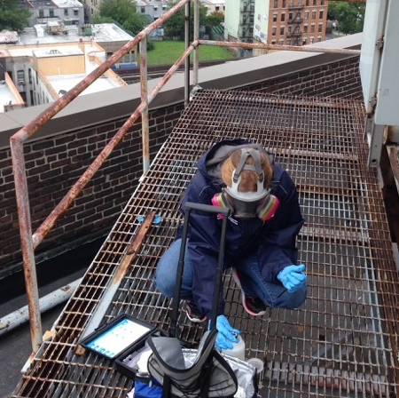

About
Our Mission
Legionnaires’ disease is a severe pneumonia with a 1 in 10 fatality rate. When a potential outbreak occurs in a community, cooling towers are often suspected as the source because they can harbor Legionella bacteria.
Outbreak investigators often manually search aerial imagery to find cooling towers. This requires expertise and time.
TowerScout uses machine learning to automatically detect visible cooling towers from aerial imagery. This accelerates outbreak response efforts so that investigators can treat contaminated cooling towers faster, stopping further spread of disease.
Learn MoreTraining Data
The model uses data from several cities to learn how to detect cooling towers. Our training data come from all over the United States and include dense urban residential areas, business districts, industrial complexes, and smaller cities.
Through a process of data augmentation, we improve how our model performs on the visually diverse communities across the country. Basic augmentation techniques generate slightly altered versions of the original image, and synthetic augmentation creates new examples that focus on difficult, rare, or unusual cooling towers or landscapes.
YOLOV5 and EfficientNet
An optimized two-stage model
TowerScout uses a two-stage model to help it find every cooling tower without also flagging other objects that resemble towers. The first stage uses YOLOv5 ("You Only Look Once"), a neural network model that identifies objects. As the title suggests, the model is a “single shot detector”, meaning it looks at the whole image at once and tries to identify the relevant areas of interest. This makes it extremely fast, while still providing fantastic performance.
We specifically leveraged the largest version of YOLOv5, called YOLOv5 XL, with pretrained weights from the COCO dataset. The model was fine-tuned for 100 epochs on a V100 GPU, and performance was evaluated using a custom evaluation metric which is aligned to the true evaluation process of our stakeholders. An optimal inference confidence threshold range was also established and used to create the default search band within the user inference.
We trained YOLOv5 to avoid missing towers, even if that meant it was overly sensitive. Potential cooling towers detected by YOLOv5 were cropped and sent to the second stage, EfficientNet B5. EfficientNet is a neural network model that classifies images into groups; in this case, it classifies the detected objects into real cooling towers versus imposters, such as patio umbrellas and skylights.

Performance
Our objective was to avoid missing towers (false negatives), as this type of error would be the most detrimental for outbreak investigators. Our best model detected aerially visible cooling towers with 95.1% sensitivity and 90.0% specificity, often identifying cooling towers that human reviewers failed to recognize on initial review.
Application
Towerscout is hosted on AWS in Python flask, and uses either Google Maps or Microsoft Bing maps as a UI and backend tile source. Place outline data is retrieved from OpenStreetMap, and zip code searches are enabled through 2010 census zip code.
PRODUCT FEATURES
What we offer
Efficiency
Identify cooling towers in minutes
Flexible Search
Search by radius, custom polygon, or place outline
Registry Creation
Customize datasets to create cooling tower registries or new training data
Testimonials
What our stakeholders are saying about us
The Legionella team is excited about the TowerScout resource for identifying visible cooling towers using aerial satellite imagery. During outbreak investigations, TowerScout enables us to quickly identify visible cooling towers using this automated tool rather than manually searching across images, which is a time- and personnel-intensive process. Additionally, TowerScout may enable public health to prospectively identify cooling towers for building a registry or conducting outreach. By sharing water management program and Legionella control resources with cooling tower owners, public health can work towards preventing future outbreaks of Legionnaires’ disease.
CDC Legionella Team
User Guide
Frequently Asked Questions
-
How do I search a new area?
In the search bar, you can search for a place, and then zoom and pan as with most maps. You can also center a particular point and create a search circle by defining the radius in meters. Lastly, you can define a search area by drawing a custom polygon on the screen.
-
How do I manually correct results?
After clicking “Find towers,” you can click towers on the map to show their address and the model’s confidence level that it is a cooling tower. Unselect objects that are not towers by unchecking the box in the results panel. If the model missed a tower, mark it by drawing a box around it, and then click “Add locations.” The review bar on the right can help us quickly flip through tiles or detections. When we are satisfied with the results of our search, we can download the results and receive them as both a CSV file and a KML file to view in Google MyMaps or Google Earth.
-
How do I save search results?
Click “Download results” to save CSV and KML files of your results. This will include any manually corrections you have made. Click “Download dataset” to download image tiles and annotations.
-
How do I load a dataset for viewing and editing?
A dataset that has been previously customized and downloaded can be restored by uploading the ZIP file with the “Restore dataset” button.
-
How do I use Label mode?
Label mode is useful when creating a cooling tower registry or a new training dataset. When you switch into this mode, the tool will show all results on any tile scanned, even if only part of the tile is inside the specified search boundary. It will also lower the confidence threshold to make sure you are not missing any detections. You can review all tiles by clicking the “>” button next to “Tile” to manually add any missed towers., After that process is complete, you can review all detections using the “>” button next to “Det.” to quickly uncheck any objects that are not towers. When you are finished, download the dataset (click “Download dataset”); this includes labelled images which can be used for additional model training and empty tiles. You can also click “Download results” to save a CSV or KML that includes the addresses of the towers.
Team
OUR DATA SCIENCE TEAM

Karen Wong
Physician, EpidemiologistThaddeus Segura
Product ManagerGunnar Mein
Software Engineer, TeacherJia Lu
Data ScientistContact
Contact Us
Email:
info.towerscout@gmail.com